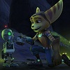
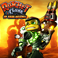
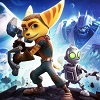
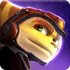
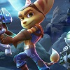

LOS JUEGAZOS NEXT-GEN 2016
LOS JUEGAZOS NEXT-GEN 2016





Ficha técnica
Plataforma: PS4
Desarrollador: Insomniac Games
Distribuidor: Sony Computer Entertainment
Género: Plataforma, Acción y Aventura
Lanzamiento: Principios de 2016
Sinopsis
Ratchet y Clank, videojuego desarollado por Insomniac Games y que será publicado en 2016. Se trata de un rebot/remake del juego original lanzado en PlayStation 2 en el año 2000. Junto con el juego llegara la película que también se lanzara en 2016. Esta nueva versión traerá nuevas armas y herramientas, así como nuevas secciones actualizadas y una jugabilidad totalmente nueva.
Autor: Julián Andrés Dabán Viloria Copyright All Rights Reserved 2015-2016